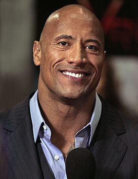

Двейн Ду́глас (Ду́ґлас) Джо́нсон (англ. Dwayne Douglas Johnson; нар. 2 травня 1972, Гейвард, Каліфорнія), спортивне та сценічне прізвисько Ске́ля (англ. The Rock) — американо-канадійський[7] актор, а також відомий реслер. З 1996 року по 2004 рік виступав в World Wrestling Federation/Entertainment (WWF/E). З 2011 року знову працює в WWE, виступаючи в основному на бренді Raw. Є восьмиразовим чемпіоном WWF/E, дворазовим чемпіоном у важкій вазі WCW, дворазовим інтерконтинентальним чемпіоном WWF і п'ятикратним чемпіоном командним WWF. Також є шостим чемпіоном Потрійної корони і переможцем Королівської битви 2000 року.
